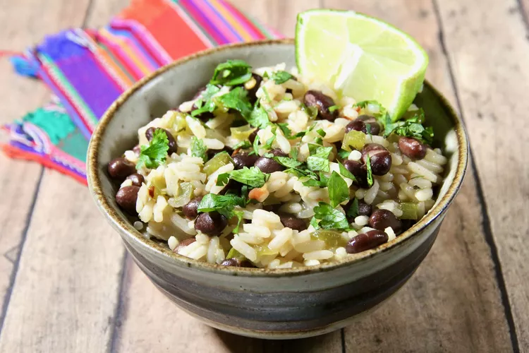

Cuban Beans and Rice

Description
Need a filling for taco night? Just enjoy a quick and cheap recipe? Try out this one, cuban beans and rice. Not only is it fast, but it's packed with flavor.
Ingredients
- 1 Medium Onion
- 3 Carrots
- 2 Celery Stalks
- 6 Roma Tomatoes (or equivalent)
- 1/2 stick Butter
- 1 Lemon
- 1/4 tsp Cayenne
- 1 tsp Thyme
- 2 Bayleaves
- 1 tsp Oregano
- 1 tsp Rosemary
- 2 cloves garlic
- Salt and Pepper
Directions
- Fill large pot halfway with water, set on stove over high heat, bring to a boil
- While you are waiting for your water to boil, dice onions, chop carrots into coins and celery into pieces.
- When water reaches to a boil, add onions, carrots and celery into the pot. Let cook for 10 minutes.
- While waiting, cut tomatoes into bite sized chunks, then throw into the pot once those 10 minutes are up. Bring down to a simmer and add butter. Stir and wait for 20 minutes.
- After those 20 minutes are up, add in the spices, lemon juice, salt and pepepr, stir, adjust spices to taste. If your soup is too thick, you can add about a cup or two of water, but remember, you'll have adjust your spices accordingly. You can only add, never subract
- Mince garlic, add to pot and then turn off heat.
Bon apetit
Back